The Dreamcast is one of the most interesting consoles ever made. First console with realistic 3D graphics at home and an incredible library of arcade ports. The one I picked up was a happy accident (depending on how you look at it), being an NTSC-J HKT-3000 with a VA0 motherboard, identifiable by the presence of a heatsink at the fan position. VA0 boards have heatpipes on both the CPU and GPU for direct cooling, and they supply their GD-ROM drive with 5V instead of the 3.3V used on later models. That last detail is what made this build complicated.
If I wanted to run a GDEMU (disc drive emulator), I'd need to do board-level voltage work first. This post covers every mod I did: PSU swap, GDEMU install, resistor array mod, fan replacement, thermal pads, RTC battery socket, and a preventative fuse swap.
The Console
For a Japanese launch model from 1998, it was in surprisingly solid shape. The disc drive worked fine (just loud), the fan buzzed more than I'd like, and the case had the usual surface marks.
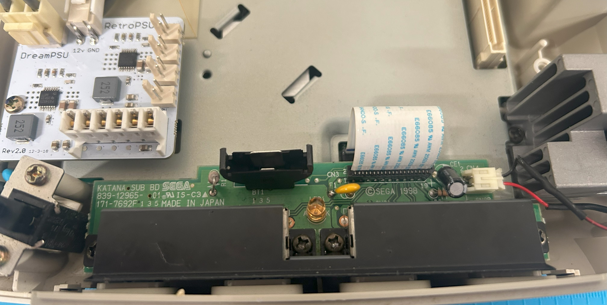
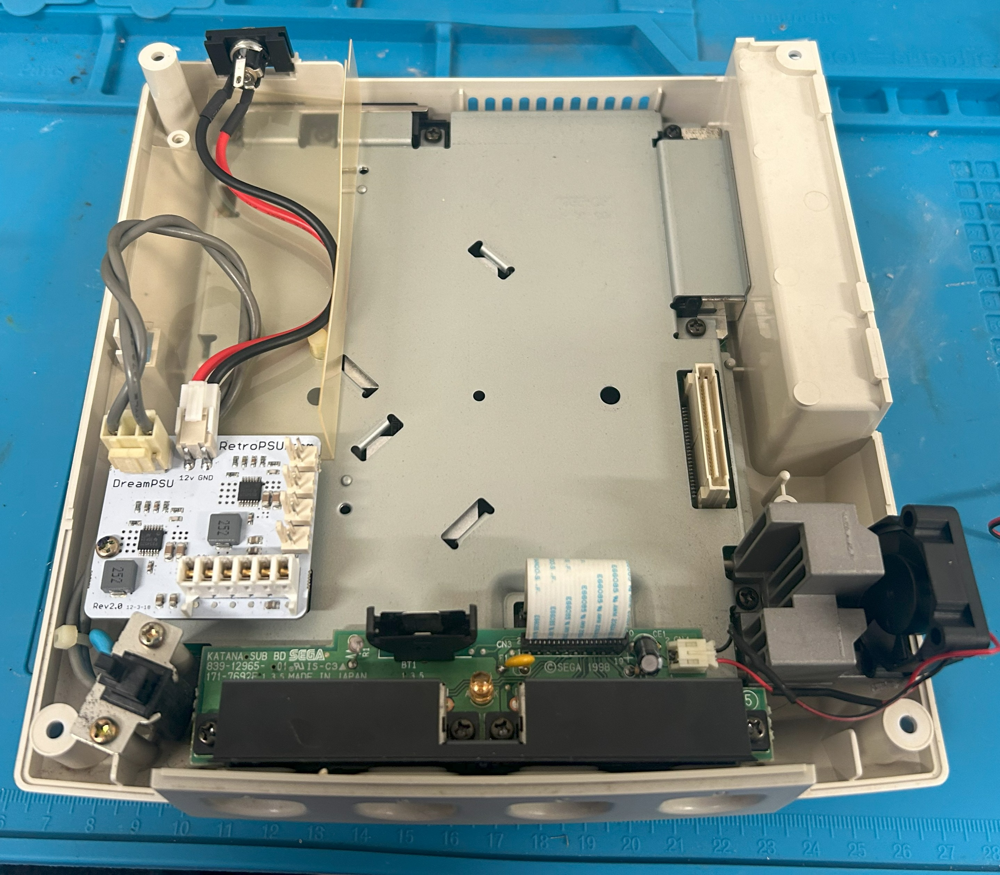
DreamPSU Rev2.0
Japanese Dreamcast PSUs are wired for 100V, so plugging one into Australian mains would fry it immediately. Rather than hunt down a step-down transformer, I went with a DreamPSU Rev2.0 paired with a generic 12V/5A external brick. The kit included a 3D-printed barrel jack holder that mounts without any drilling.
- Internals run cooler, with all the PSU heat now outside the console
- No risk of destroying an original, irreplaceable PSU
- Airflow improved with the bulky internal PSU removed
- Clean external finish, with the barrel jack holder fits perfectly in the existing opening
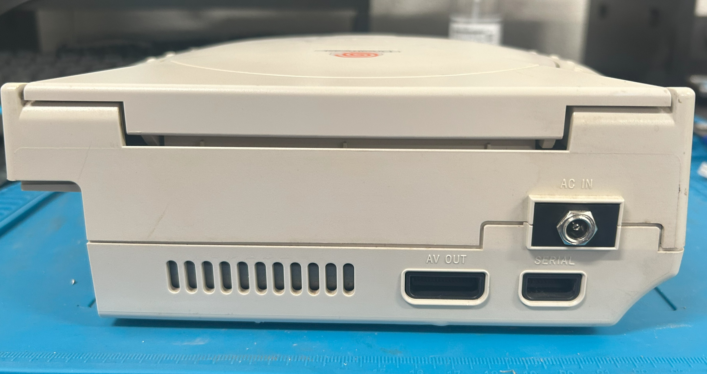
GDEMU v5.20.5 + Array Resistor Mod
This is where the VA0's quirk became a real problem. The GDEMU expects a 3.3V supply rail, but the VA0 feeds 5V to the disc drive connector. Plug it in without fixing the voltage and the GDEMU would die over time. The fix is a resistor array mod: replacing seven tiny SMD resistor arrays on the board to drop the rail down to 3.3V.
- Desoldered and replaced seven resistor arrays — 7× 33Ω replaced with 7× 100Ω
- Verified ~3.3V at the GD connector with a multimeter before touching the GDEMU
- 128GB full-size SD card (microSD cards don't work with the GDEMU)
- OpenMenu as the loader: shows game box art, clean and fast
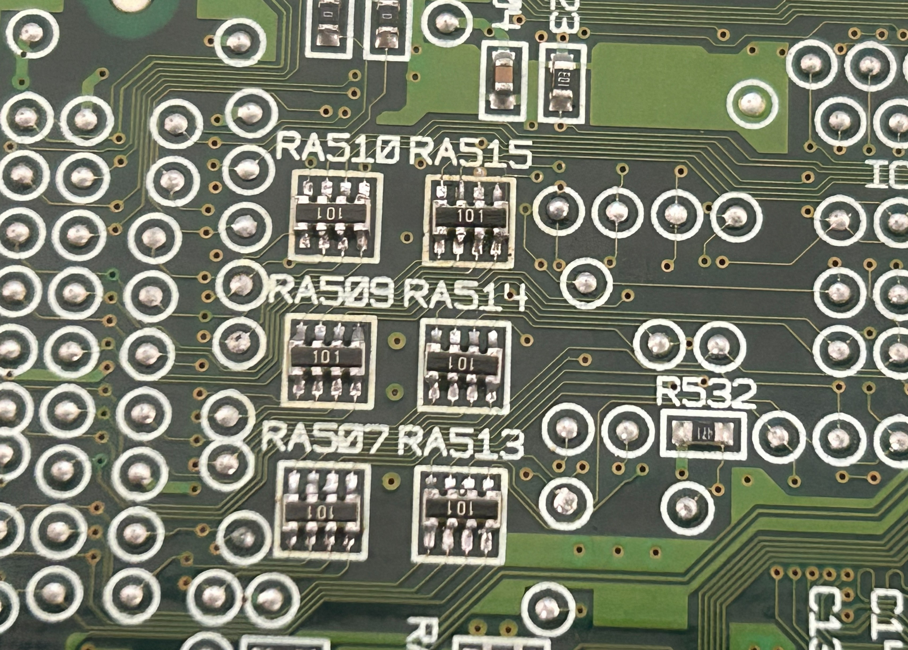
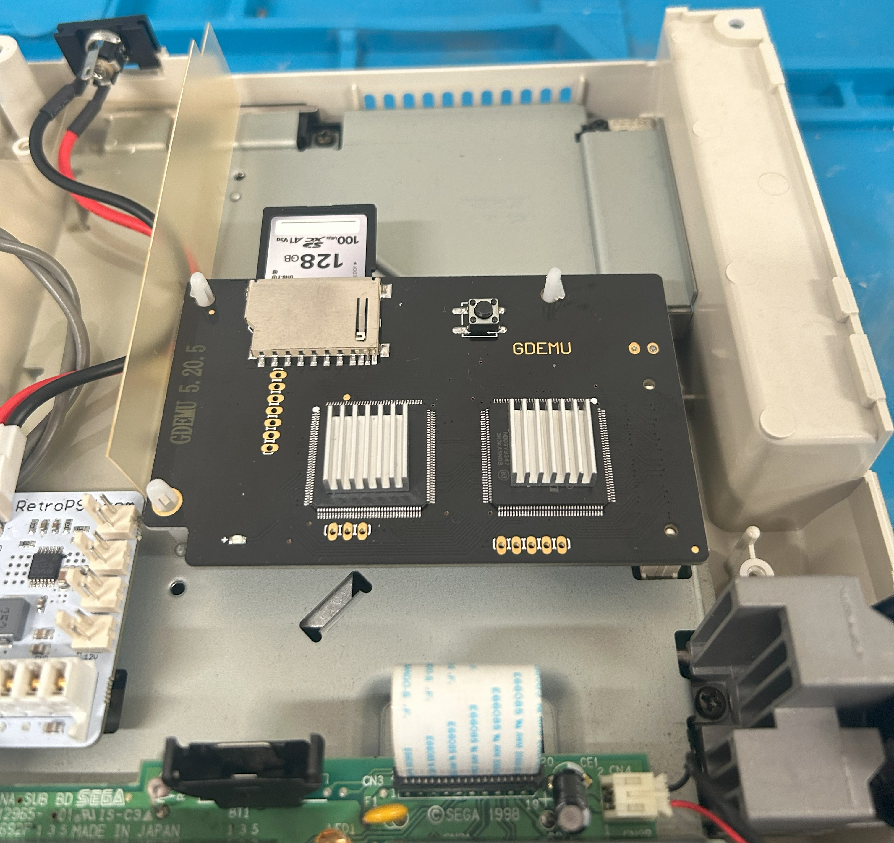
This took an entire weekend. The first resistor array took nearly two hours of careful work under magnification. By the last one, I was doing it in fifteen minutes. My micro-soldering confidence improved more from this single mod than from anything else I'd done before.
Fan Mod (VA0-Specific)
Standard Noctua fan mods for the Dreamcast don't fit the VA0 because of the heatpipe assembly. I tried restoring the original fan with silicone grease on the bearing, but that barely helped. So I sourced a near-identical replacement instead.
- 30×30×10mm 5V fan from a 3D printer parts supplier, identical footprint as stock
- Spliced the original JST connector onto the new fan leads with solder and heat-shrink
- Dropped straight into the stock case guides, no adapter or cutting needed
- Configured the same airflow direction as stock, pulling hot air through the heatsink and out of the console
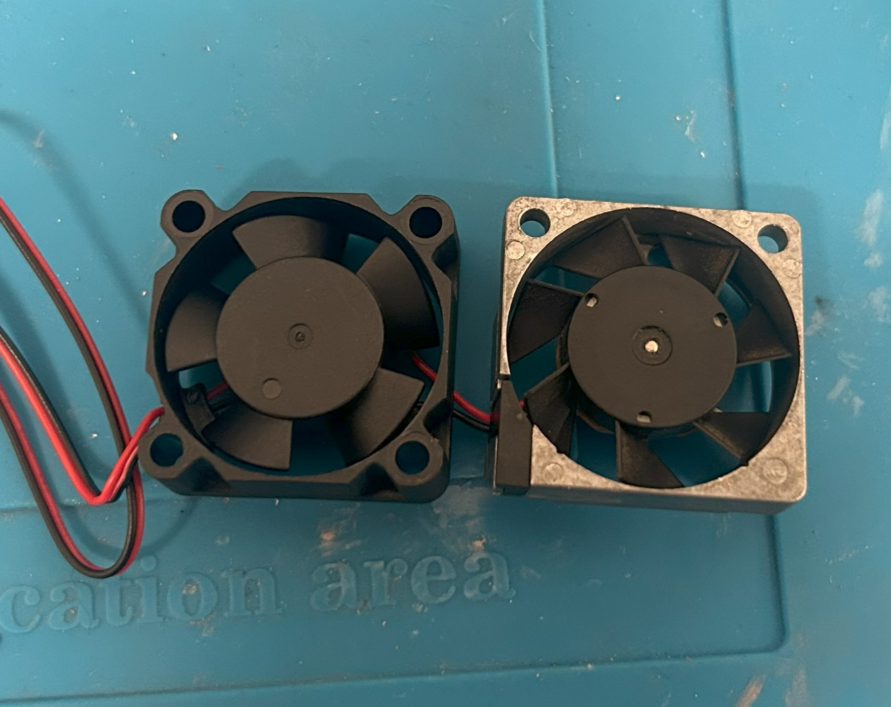
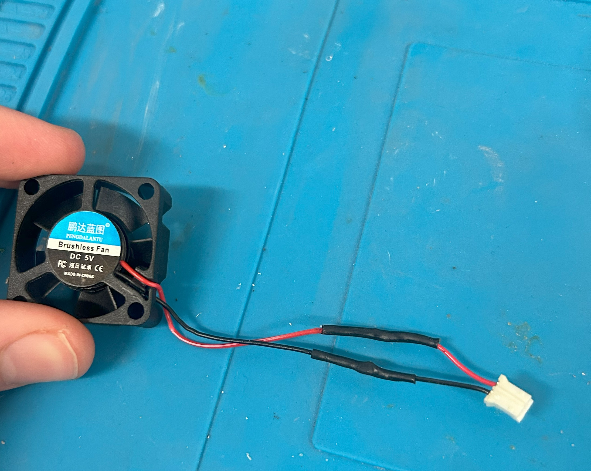
RTC Battery Socket Mod
The Dreamcast uses a rechargeable RTC battery to keep the clock. After 27 years, most of them hold charge for a few days at best, if at all. I swapped in a female socket and a CR2032 coin cell.
- Console now keeps time for 2–4 months on a single CR2032
- Battery replacement is nearly tool-free going forward
- Standard CR2032 means no hunting for obscure replacement cells
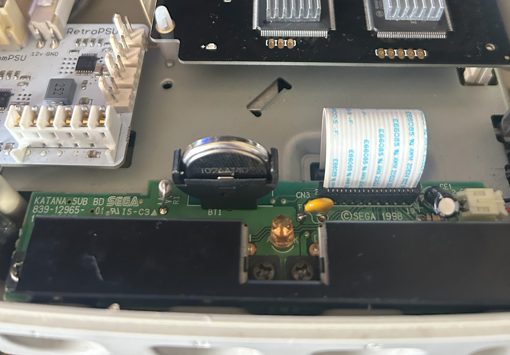
Controller Board Resettable Fuse
The Dreamcast controller board has a notoriously fragile single-use fuse. Once it blows, all four controller ports go dead. It's a common failure point on old units, and a easy preventative fix.
- Replaced with a 0.4A 72V polyfuse, bought in a pack of 50 for less than a single "Dreamcast fuse" costs online
- My original fuse hadn't blown yet, this was pure preventative maintenance
- If it trips, it resets in a minute or two without any soldering
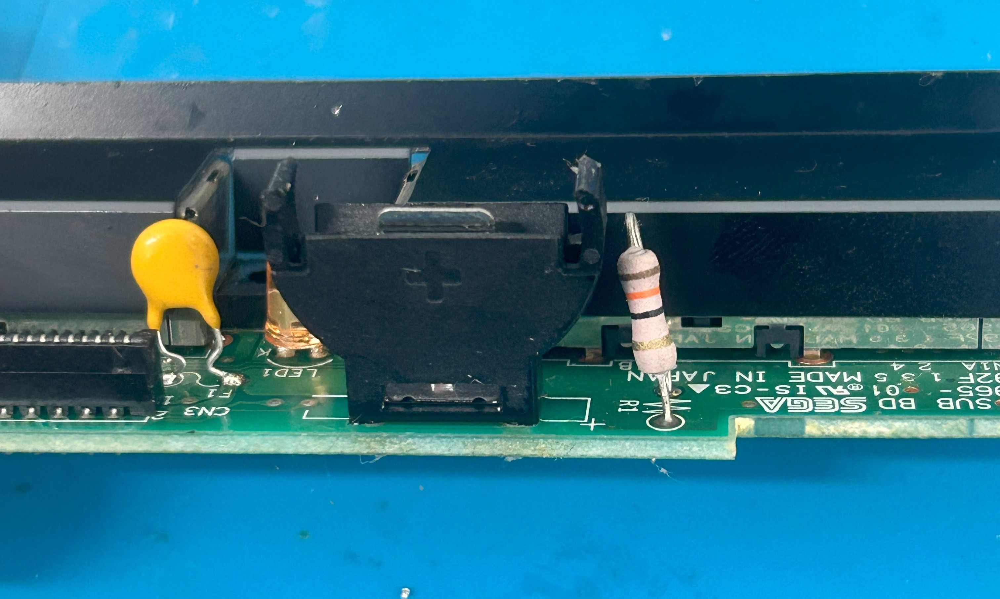
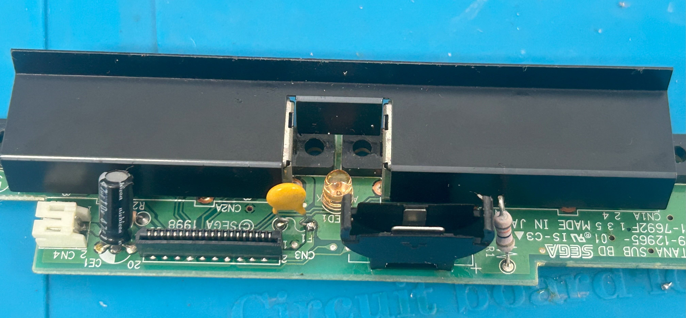
Testing and Results
- Verified 3.3V at the GD connector ✓
- Noise: went from loud buzzing (fan + disc drive) to near-silent
- Thermals: new fan + thermal pads + no internal PSU + passive GDEMU = significantly cooler
- Stability: boots every time, no crashes, runs better than any stock Dreamcast I've seen
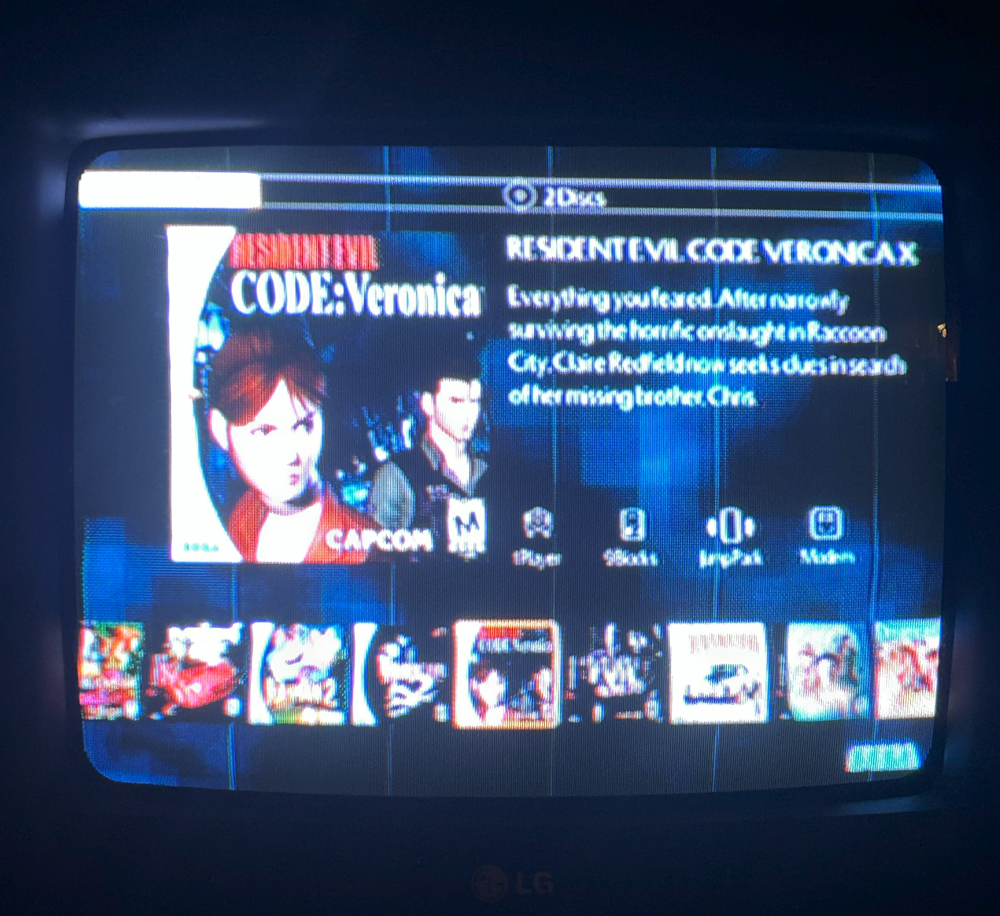
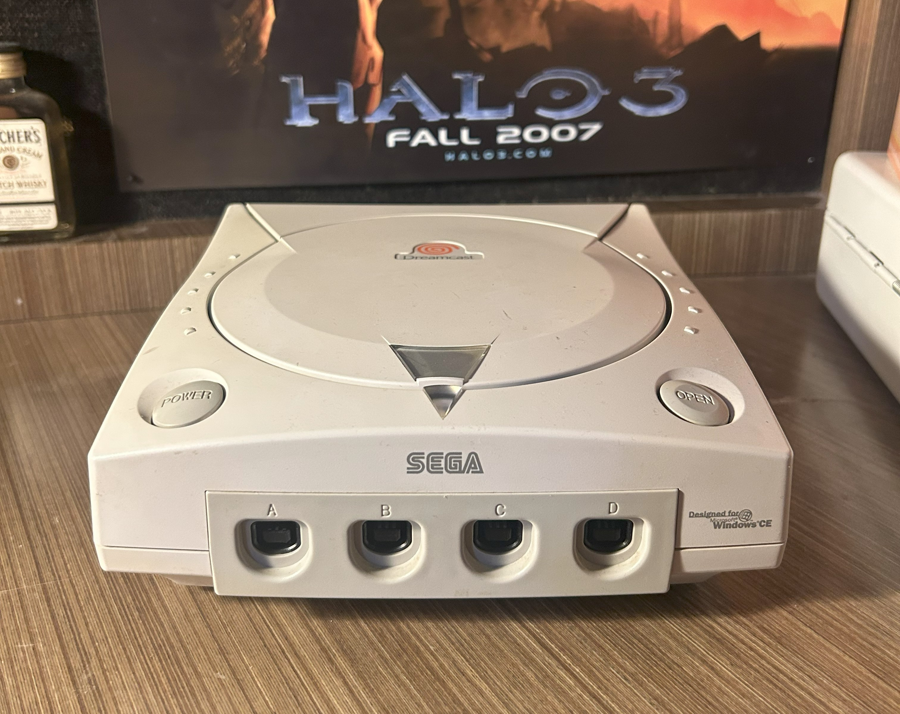
Wrapping Up
This VA0 Dreamcast went from a boring stock Japanese unit to fully modernised: external PSU, whisper-quiet fan, ODE, safer fuse, and a proper RTC battery. It runs cooler, quieter, and will last far longer than Sega ever intended.
The resistor array mod was the most challenging thing I'd done up to that point. It pushed my micro-soldering to a new level and gave me the confidence to take on the Xbox 360 RGH3 build that came after. These are exactly the kinds of projects I love, extracting the most out of old hardware, and making it reliable, practical, and fun to use again.
Shoutouts
- Protopia: Array resistor mod guide for VA0 Dreamcasts
- Macho Nacho Productions on YouTube: build inspiration